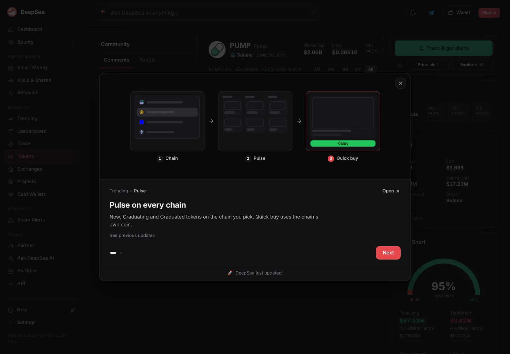
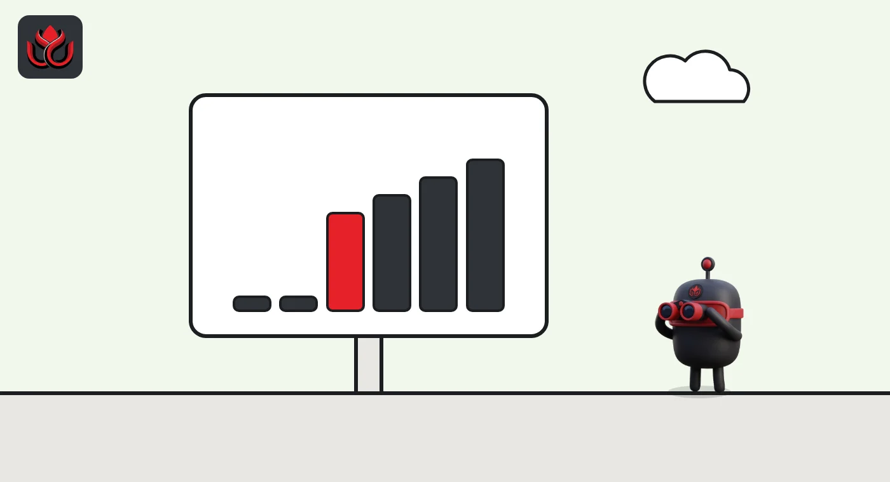
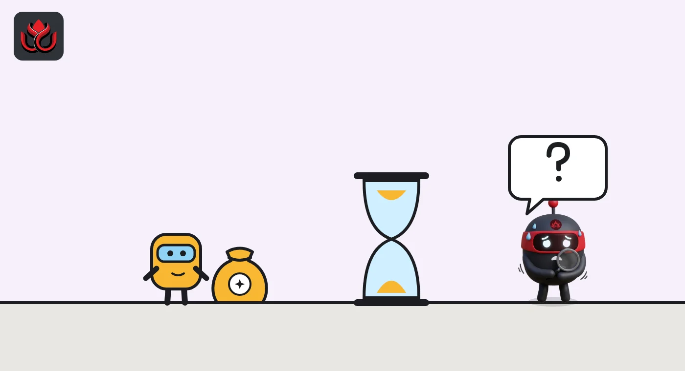

Token unlocks explained: cliffs, vesting and why unlocked does not mean sold
A token unlock is when tokens locked at launch, usually for the team, investors or a treasury, become free to move. Unlocks add to circulating supply and dilute holders, but an unlocked token is not a sold one: Hyperliquid insiders claimed far less HYPE than they could.
Key points
- An unlock releases tokens that were allocated and locked when the token was created. Unlocks end once every allocation has vested.
- Cliff unlocks release a big tranche at once. Linear unlocks release a little at a time.
- Unlocks raise circulating supply and dilute existing holders, but recipients do not have to sell or even claim.
- Unlock calendars from trackers are estimates. Check the project's own schedule and onchain claims.
 What DeepSea's data shows
What DeepSea's data shows
The gap between market cap and FDV is a rough guide to supply still to come. DeepSea's PUMP page showed a market cap of $1.90 billion and an FDV of $4.58 billion on November 2, a ratio of about 0.41.
This ratio comes from DeepSea's own supply data and can differ from other sites and unlock trackers, which also show when each tranche is released.

Data: DeepSea (desea.io), checked November 2, 2026, 7:58 a.m. ET.
What is a token unlock?
When a crypto project creates its token, it splits the supply between groups such as the team, investors, a treasury, ecosystem funds and the community. Much of that supply is locked so insiders cannot sell on day one. A token unlock is the moment some of those locked tokens become transferable.
Tokenomist, which tracks unlock schedules, separates unlocks from emissions. Unlocks release tokens that were allocated and locked at token generation, and they stop once those allocations have vested. Emissions mint new tokens, for example as staking rewards, and can go on indefinitely.
Locking exists for a reason. CoinGecko's tokenomics guide says vesting locks tokens and releases them gradually, which helps prevent sudden sell pressure and ties the team's rewards to the project's long-term success. Tokenomist suggests modeling each source of new supply separately, and its sample unlock alerts list releases by recipient (investors, team, treasury) next to the share already circulating.
What is the difference between a cliff and linear vesting?
Vesting is the release schedule. CoinMarketCap's tokenomics guide describes two main shapes:
- Cliff. An initial lockup where nothing unlocks for a set time, then a large tranche releases at once.
- Linear. Tokens release gradually, for example a fixed amount each day or month.
Many schedules combine both: a cliff, then linear vesting for the rest. CoinMarketCap notes that the same total allocation creates very different supply pressure depending on the shape. Tokenomist's low-float guide makes the same point: a cliff can release a big tranche at once, while linear vesting spreads the pressure out.

Why do token unlocks matter?
Unlocks increase the circulating supply, which dilutes existing holders. Tokenomist puts it simply: each new token makes every existing token a smaller share of the total. If demand stays flat while supply grows, the price has to absorb it.
The size of the unlock relative to what already circulates matters more than the dollar headline. Tokenomist's market cap vs. FDV guide says a market-cap-to-FDV ratio below 0.3 means more than 70% of supply is still locked, which points to substantial future supply. It also says large gaps do not guarantee a price drop, because strong demand can absorb new supply.
Who receives the tokens matters too. Investors with a low entry price may sell. A treasury may hold for years. LC Insight covered an example of unlock promises meeting a falling price in the Ethos WHUF story.
Does an unlocked token get sold?
Not necessarily, and often not right away. An unlock makes tokens available. The holder still has to claim them, and then decide whether to sell.
Hyperliquid's HYPE shows the gap. Tokenomist's research says the Core Contributor allocation is 238 million HYPE, and its model of the whitepaper's 24-month linear schedule projects about 9.92 million HYPE a month. Actual monthly claims were far lower: 1,745,746 HYPE in November 2025, 140,333 in February 2026 and 173,217 in March 2026, according to Tokenomist's April 1, 2026, analysis. By March 23, 2026, about 3.19 million HYPE had been claimed. Tokenomist notes the claim data is its own, cross-checked with public transactions.
HYPE core contributor claims vs. modeled monthly unlock
million HYPE
Source: Tokenomist, HYPE Tokenomics (April 1, 2026). No separate December 2025 distribution.

How do you check an upcoming token unlock?
- Start with the project. Its tokenomics page or docs should list allocations, cliffs and vesting length.
- Use a tracker for the calendar. Tokenomist's HYPE page, for example, listed the next unlock as November 6, 2026, to Core Contributors, as of November 2, 2026, with about 23.94% of the 1 billion supply unlocked. Some detail sits behind a paywall.
- Compare with circulating supply. An unlock worth 1% of supply is a different event from one worth 20% of what trades today.
- Watch onchain claims. Explorers show whether tokens actually left the vesting contract and where they went.
Remember that circulating supply figures are estimates too. CoinMarketCap's supply rules exclude locked and insider tokens, and even unlocked tokens that cannot be sold on the public market.
Can supply go down instead of up?
Yes, through burns. A burn sends tokens to an address nobody controls, removing them for good. CoinMarketCap's tokenomics guide notes that BNB's maximum supply now sits below its original ceiling because of repeated burns. Lisk went further in 2026: its token FAQ says a one-time burn of 100 million LSK is in progress and will cut total supply from 400 million to 300 million, a quarter of the total.
Burns and buybacks are often presented as a way to offset unlocks. Tokenomist's low-float guide suggests checking whether protocol revenue, buybacks or burns offset new supply when weighing an unlock schedule. The math is simple to state: if a project burns fewer tokens than it unlocks, circulating supply still rises.
Unlocks also change the gap between market cap and FDV. As of November 2, 2026, CoinGecko showed HYPE with about 239.4 million tokens circulating out of about 951.5 million total. Every unlock that reaches the market narrows that gap, which our guide to FDV and market cap explains in more detail.
What are the risks around unlocks?
The obvious risk is selling pressure from early holders. Less obvious ones: schedules can change, trackers can disagree with each other, and a token with a small float can reprice sharply when a big tranche lands. Tokenomist's low-float guide points to gaming tokens that launch with 5% to 10% circulating and multiyear release schedules, which it says face persistent downside as those releases arrive. None of this predicts a price. It tells you how much new supply the market has to absorb.
Exact timing is also less certain than calendars suggest. Trackers model schedules from documents, and some of Tokenomist's event detail sits behind a paid tier. When the project publishes its own schedule, that document should come first, with trackers used to cross-check and onchain claims used to confirm what actually moved.
LC Insight analysis
This section is our reading of the facts above, not a statement of fact.
- The most misread number in crypto is the dollar value of an unlock. What counts is its size against today's float, who gets it and whether they have a reason to sell.
- HYPE shows that unlocked and sold are different things. Slow claims ease the pressure, but they also leave a large overhang that can move at any time.
- Modeled and paywalled unlock data is a growing problem. When a tracker and the project disagree, the onchain vesting contract settles it.
What's next
- HYPE's Core Contributor unlock on November 6, 2026
- Projects changing vesting terms after launch
- Onchain claims from vesting contracts after large cliffs
Frequently asked questions
Do token prices always drop after an unlock?
No. Tokenomist says strong demand can absorb new supply. An unlock shows how much supply enters, not what buyers will do.
What is a vesting cliff?
A cliff is a period where nothing unlocks, followed by a large release at once. After the cliff, the rest often vests linearly.
Are unlocks and emissions the same?
No. Unlocks release tokens created at launch and end when allocations vest. Emissions mint new tokens, such as staking rewards, and can continue.
Where can I see a token's unlock schedule?
The project's own tokenomics page is the primary source. Trackers such as Tokenomist show calendars, but they model schedules and can differ from what happens onchain.
Disclaimer. This article is based on public information and the sources listed below as of the update time shown. It is for information only and is not investment, legal or tax advice. Figures may change as companies and authorities publish new data.
Sources
- Tokenomist, What is Token Dilution?
- Tokenomist, Market Cap vs FDV
- Tokenomist, What is Low Float / High FDV?
- Tokenomist, HYPE Tokenomics: ~330K or 9.9M HYPE Unlocks? (April 1, 2026)
- Tokenomist, Hyperliquid (HYPE) unlock events (checked November 2, 2026)
- CoinMarketCap Academy, What Is Tokenomics?
- CoinMarketCap Support, Supply (Circulating, Total, Max)